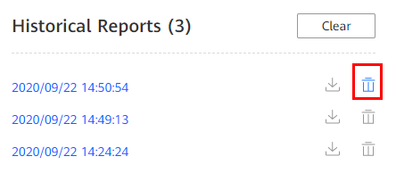

Prerequisites
You have logged in to the Kunpeng Porting Advisor WebUI.
Procedure
- Choose Software Porting Assessment from the navigation pane on the left.
- In the Historical Reports area, locate the report to be deleted and click
 .
.

- A maximum of 50 reports can be stored. You can click Clear to delete all the historical reports.
- After a report is deleted, the analysis data in the report cannot be restored. Exercise caution when performing this operation.
Figure 1 Deleting an analysis report
 - In the dialog box displayed, click OK.